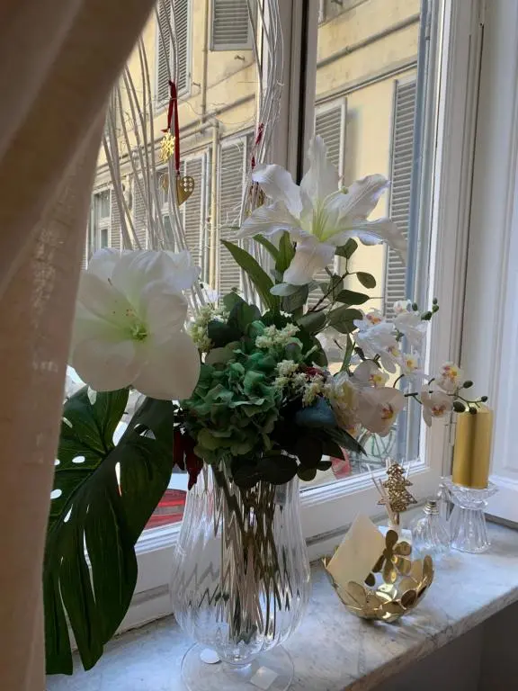
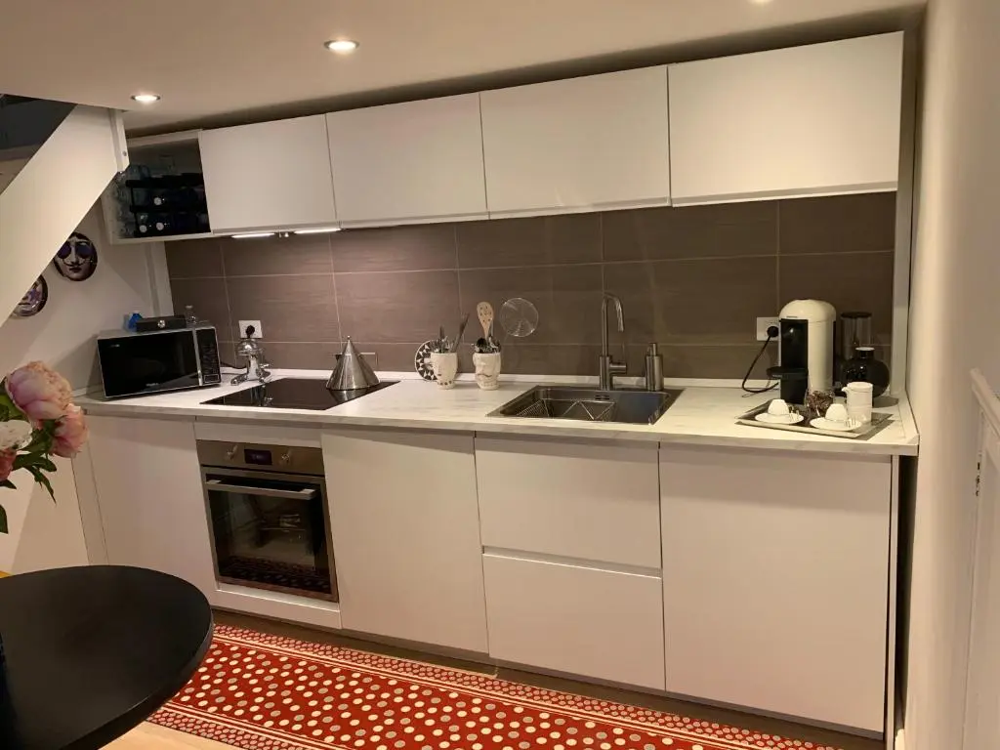
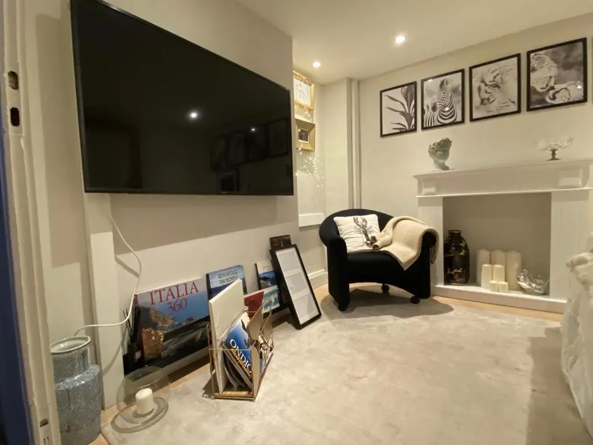
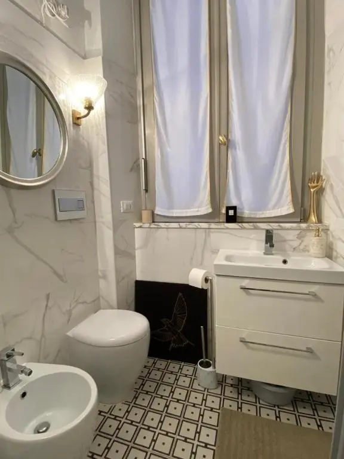
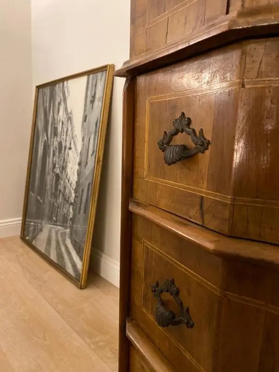

Scopri lo stile di vita di lusso a Torino
Un rifugio architettonico per l'intenditore moderno.
Residenza di pregio
L'appartamento è un dialogo tra la tradizione piemontese e il design contemporaneo.


Servizi Raffinati per il Viaggiatore Moderno
Non offriamo solo una appartamento, ma un ambiente curato pensato sia per la produttività che per il relax.
Café in Appartmento
Il piacere raffinato di una bevanda versata alla perfezione, pensata appositamente per il tuo rituale mattutino.


Cucina Moderna
Completamente attrezzata con elettrodomestici di alta gamma e tutto il necessario per una piacevole esperienza in cucina.
"Appartamento molto accogliente, arredato con gusto, pulito e confortevole. Spazi giusti per 4 persone. La proprietaria ha fornito tutte le indicazioni per l'accesso e risposto celermente alle ns. richieste. La struttura si trova vicino alla stazione centrale a pochi passi dal centro."
Nel cuore del Quadrilatero
Situato tra il Museo Egizio e il Palazzo Reale, il nostro appartamento vanta la posizione più prestigiosa della città. Scoprite il ritmo pulsante di Torino da un rifugio tranquillo, circondato da strade acciottolate.
Museo Egizio
10 minuti a piedi
Mole Antonelliana
12 minuti a piedi

Via Paolo Sacchi, 36
La Lente dell'Appartamento
#TURINATELIERLUX


